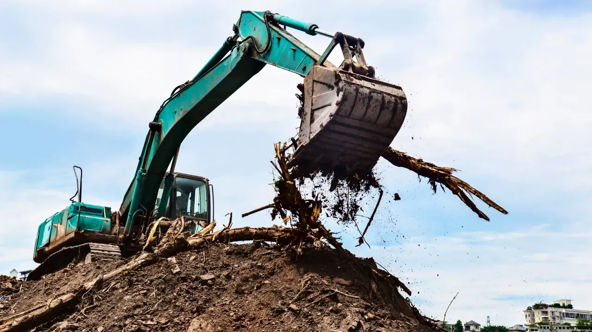

Land Clearing in the Northshore
Big Easy Land Clearing works wooded acreage and rural tracts across the Northshore: tree removal, forestry mulching, brush clearing, lot preparation, and grading. Licensed and insured, 100% satisfaction guarantee, free estimates: 504-517-0012.
Northshore parcels tend to run bigger and greener than what you find closer to the city, and that changes how a job gets worked. Long gravel drives, thick understory, a tree line that has not seen a saw in years. We bring the equipment the acreage actually calls for, and the estimate is free, fast, and accurate.
One crew, one estimate
What Land Clearing Services Are Available on the Northshore?
Tree removal
For pines and hardwoods across an acreage lot, not just the one tree by the driveway. We work a whole tree line when the scope calls for it.
Forestry mulching
The tool of choice for dense undergrowth and rural tracts. One machine, one pass, and the material stays on the ground instead of piled at the road.
Brush clearing
For fence lines, pasture edges, and back acreage that has grown up thick over the years.
Lot preparation
Taking a wooded parcel from raw ground to a cleared building pad, ready for the next crew.
Grading and site leveling
For a driveway, a pad, or a stretch of acreage that needs to drain right once the clearing is done.
Environmental services
For drainage and wetland-aware clearing on rural ground, plus a straight conversation about what is on your acreage before a machine rolls onto it.
The method
How Do We Work a Wooded Tract?
Every job starts with a walk of the property. On the Northshore we look at access first, same as anywhere, but the question is different: how far back does the road go, what will a gravel or dirt drive hold, and how much of the tract is actually reachable by machine. Then we quote it straight. Free, fast, and accurate, with a real number in front of you before any work starts.
Rural acreage carries its own hazards. Downed timber, old fence wire buried in brush, low ground that holds water after a rain. We walk it before we quote it so the number reflects what is actually out there, not a guess. Depending on the parish and the scope, clearing or demolition work may require a permit. We are not attorneys and we do not pull permits on your behalf, so raise it during your free estimate and we will tell you what we are seeing on the ground.
Bigger parcels usually come down to one choice: forestry mulching a tract in place, or clearing and hauling everything off. Mulching wins on most rural jobs because it covers ground fast and leaves the material where it can break down instead of at the curb. A tighter lot closer to a subdivision might call for the opposite. We quote what your ground actually needs, and our guides walk through the cost and permit questions before you ever pick up the phone.
More of what Louisiana property owners say about the crew is on our reviews page.

Straight answers
Northshore Land Clearing FAQs
How much does land clearing cost on the Northshore? +
Do you clear large wooded lots, or just small ones? +
Are you licensed and insured? +


Call 504-517-0012 for a Free Estimate
One crew, the right equipment, and a real number up front.
Free, fast, and accurate
Get Your Free Estimate
Call us or send the form. Licensed and insured, backed by a 100% satisfaction guarantee.
504-517-0012- ✓ Free, fast, and accurate estimates
- ✓ Licensed and insured
- ✓ 100% satisfaction guarantee